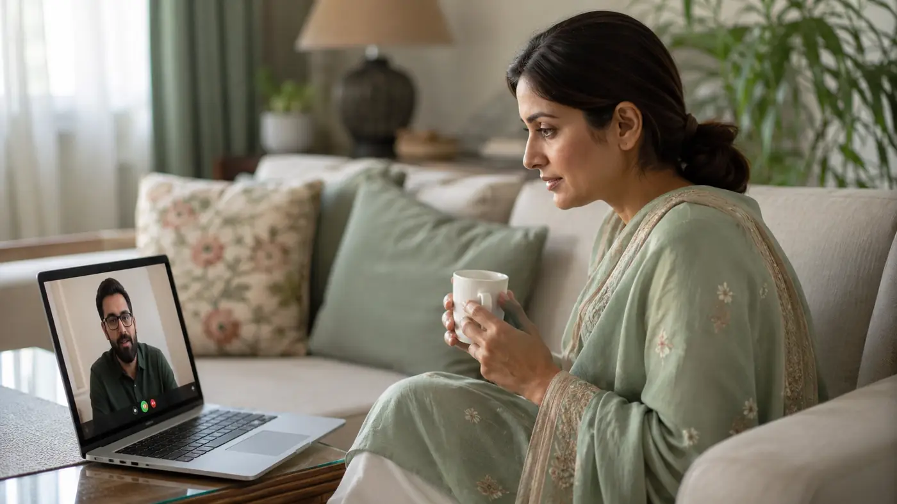

It is one of the most common questions I hear before someone books a first session: "Does online therapy actually work, or is sitting in a room with a therapist better?" It is a fair question. For most Pakistanis — at home or in the diaspora — the honest answer is that online therapy is just as effective for the great majority of concerns, and for our specific circumstances it is often the more practical choice.
What the research actually says
The evidence here is no longer in doubt. UCLA Health reports that researchers reviewed more than 60 studies and found that seeing a therapist over video is just as effective as face-to-face sessions for most people with anxiety, depression and PTSD. A separate systematic review and meta-analysis in Psychological Medicine found no significant difference in outcomes between telehealth and in-person care for depression.
What matters far more than the format is the quality of the therapist, the trust between you, and showing up consistently. A screen does not get in the way of those things.
Why online therapy suits Pakistan especially well
It removes the stigma barrier. The biggest reason people avoid help here is not cost — it is log kya kahenge. There is no waiting room where you might run into a relative or neighbour. You speak from a private room in your own home.
It solves the access problem. Pakistan has one of the lowest numbers of mental health professionals in the world — roughly 0.19 psychiatrists per 100,000 people, with an estimated 24 million Pakistanis needing mental health support (Frontiers in Health Services (2024)). Outside the big cities, qualified therapists are almost impossible to find in person. Online therapy connects someone in Multan, Peshawar or a small town with the same UK-certified care available in Islamabad.
It saves the commute. A 50-minute session can mean two hours lost to traffic in Karachi or Lahore. That friction is one of the main reasons people quit therapy early. Remove it, and you are far more likely to keep going.
It is affordable and transparent. At Healing with Attia, every session is PKR 5,000 for 50 minutes, with no clinic overheads inflating the price.
The case for the diaspora
For Pakistanis in the UK, the Gulf, or anywhere else, online therapy solves something in-person care often cannot: finding a therapist who actually understands your world. Local therapists may be excellent, but explaining joint-family dynamics, a rishta breakdown, or faith-based guilt in your second language loses the nuance. Online, you can work with a Pakistani therapist in Urdu, English or Punjabi, and keep the same therapist even if you move countries or travel for work.
When in-person is the better choice
Online therapy is not right for everything. You should see someone in person if you need a psychiatric assessment, medication, or psychological testing — these require a doctor physically present. The same is true in an acute crisis or where symptoms are severe and substantially disrupt daily functioning. Some people also simply feel more present face-to-face, and that preference is valid.
A quick comparison
| Factor | Online therapy | In-person (Pakistan) |
|---|---|---|
| Outcomes for common concerns | Equivalent for anxiety, depression, trauma, relationships | Equivalent |
| Privacy / stigma | High — no waiting room | Lower — risk of being seen |
| Access outside big cities | Full access nationwide | Very limited |
| Commute | None | 30–60 min each way in city traffic |
| Language & cultural fit | Broad (Urdu, English, Punjabi) | Depends who is nearby |
| Cost | PKR 5,000 / 50 min | Often higher with clinic overheads |
| Psychiatric assessment / medication | No | Yes |
For most people seeking talk therapy — for anxiety, depression, marriage difficulties, OCD, burnout or grief — online is not a compromise. It is simply therapy that fits your life.
Talk to a UK-Certified Therapist
Curious whether online therapy would work for you? The best way to find out is to try one session.
Book on WhatsAppOnline · Urdu & English · PKR 5,000 / 50 min · no waiting list